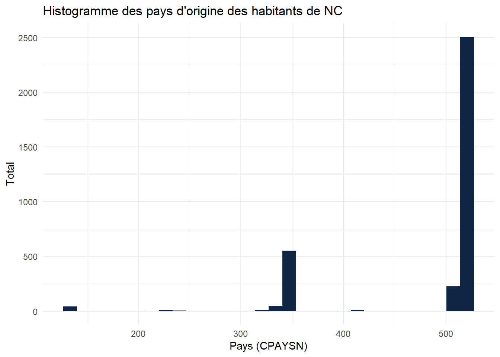
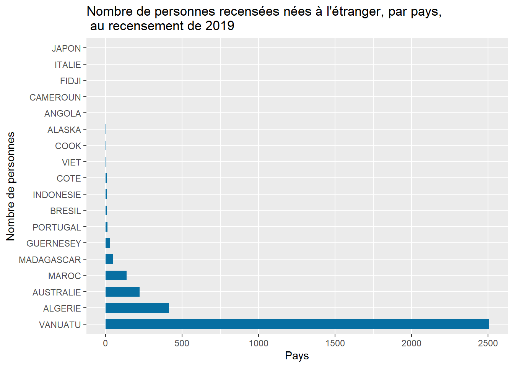

RP2019NC_OD_ind_Iles <- readr::read_delim(here("..", "02_donnees", "RP2019NC_OD_ind_Iles.csv"),
delim = ";", escape_double = FALSE, trim_ws = TRUE)
RP2019NC_OD_ind_Nord <- readr::read_delim(here("..", "02_donnees", "RP2019NC_OD_ind_Nord.csv"),
delim = ";", escape_double = FALSE, trim_ws = TRUE)
RP2019NC_OD_ind_Sud1 <- readr::read_delim(here("..", "02_donnees", "RP2019NC_OD_ind_Sud1.csv"),
delim = ";", escape_double = FALSE, trim_ws = TRUE)
RP2019NC_OD_ind_Sud2 <- readr::read_delim(here("..", "02_donnees", "RP2019NC_OD_ind_Sud2.csv"),
delim = ";", escape_double = FALSE, trim_ws = TRUE)Formation R - Module 2 : Analyse du RP
Introduction
Ce cours à pour but de vous montrer à quoi une simple analyse peut ressembler sous R, la manière dont on structure son script. Ne vous en faîtes pas si certains détails vous échappent, le but ici est de s’imprégner de la méthode de travail, et s’habituer à lire un peu de code. Travailler avec R demande de la pratique, une capacité à apprendre et une bonne dose de curiosité. Petit à petit, vous apprendrez à manipuler les données, les visualiser, les analyser.
Bref. Ici, nous allons étudier le jeu de données OPEN DATA du RP 2019.
J’ai décrit ce jeu de données ici : RP2019 - OPEN DATA
Importation des données
Chargeons les données du RP 2019.
Sur le site de l’ISEE, les données sont divisées en 4 fichiers :
Province des Îles
Province Nord
Province Sud 1/2
Province Sud 2/2
J’importe donc les données avec la fonction read_delim. Notez qu’il existe PLEIN de fonctions d’importation dans R.
Aucun intêret de les connaitre par coeur, faites plutôt une recherche internet selon le type de fichier à importer.
Voila nos données chargées ! Maintenant, on doit les compiler en un seul jeu de données. Je le fais avec la fonction Rbind, qui combine des objets par lignes (en gros, il les ajoute bout-a-bout les uns aux autres ! L’équivalent existe pour ajouter des colonnes et non pas des lignes (cbind).
RP2019NC_OD_ind_3Provinces <- rbind(RP2019NC_OD_ind_Iles, RP2019NC_OD_ind_Nord, RP2019NC_OD_ind_Sud1, RP2019NC_OD_ind_Sud2)Objectif : Quelles nationalités en NC ?
Pour le recensement 2024, je dois créer une liste des 10 nationalités les plus communes en Nouvelle-Calédonie (hors nationalité Française). Je dois donc analyser les pays dont proviennent les concitoyens qui ont répondu au recensement !
Voyons voir !
# Voici un exemple de figure (plot en anglais) avec ggplot2.
# L'utilisation de ce package est un peu complexe, mais elle fera l'objet d'un cours à part entière.
ggplot(RP2019NC_OD_ind_3Provinces) +
aes(x = CPAYSN) +
geom_histogram(bins = 30L, fill = "#112446") +
labs(x = "Pays (CPAYSN)", y = "Total", title = "Histogramme des pays d'origine des habitants de NC") +
theme_minimal()
On y comprend rien, puisque des chiffres s’affichent quand on attendait des pays en abcisse ! Dans notre documentation de données on peut voir :
Note
CPAYSN – Code pays de naissance
(longueur : 3 ; type : caractère)
Code Insee du pays de naissance (se référer aux 3 derniers chiffres du code).
Consulter la codification des pays et territoires étrangers : https://www.insee.fr/fr/information/2028273
J’ai donc été sur le site de l’INSEE récuperer la nomenclature des pays. Importons la, joignons la à nos données et mettons à jour ce graphique.
Classification_pays_INSEE <- read_table(here("..", "02_donnees", "Classification_pays_INSEE.txt")) %>%
# Je supprime ici tous les charactères non numériques.
mutate(Code = as.numeric(str_replace_all(Code, "[^0-9]", ""))) %>% # <-- Le PIPE
# Et on enlève les 99 au début du code pour s'adapter à notre jeu de données.
mutate(Code = Code - 99000)
#La fonction "head" me permet de voir l'entête d'un jeu de données (voyez ci-dessous)
head(Classification_pays_INSEE)# A tibble: 6 × 3
Continent Code Pays
<chr> <dbl> <chr>
1 Europe 125 ALBANIE
2 Europe 109 ALLEMAGNE
3 Europe 130 ANDORRE
4 Europe 135 ARUBA
5 Europe 110 AUTRICHE
6 Europe 131 BELGIQUE Notez que ci-dessus j’utilise l’opérateur “pipe” (le tuyau, en anglais), qui est codé par ” %>% “. Cet opérateur permet de passer le résultat d’une opération vers une autre opérations afin de faciliter la lecture du code et le rendre plus compact.
Vous allez voir c’est très simple :
# SANS LE PIPE : Additionner 10 + 1 + 1 + 1
exemple <- 10
exemple2 <- exemple + 1
exemple3 <- exemple2 + 1
exemple4 <- exemple3 + 1
# On nomme les nouvelles variables différemment, JAMAIS AVEC LE MÊME NOM !!!
exemple4[1] 13C’est long, et on créé 4 variables !
# AVEC LE PIPE
exemple <- 10 %>%
+1 %>%
+1 %>%
+1
exemple[1] 13C’est court et plus agréable à lire, non ? Hé bien dites vous que quand votre script sera long et complexe, un peu de simplicité sera plus que bienvenue !
Revenons a notre objectif : Lier la nomenclature des pays obtenue sur le site de l’INSEE à notre jeu de données. Pour cela, faisons la jointure avec la fonction left_join (nous en reparlerons en cours N°4 ) …
… mais attention, mon ordinateur n’étant pas une machine de guerre, je vais d’abord vérifier la taille de notre fichier !
nrow(RP2019NC_OD_ind_3Provinces)[1] 271407Ouille ! 271407 lignes ! On va donc enlever toutes les lignes d’invidus pour lesquels il n’y a pas de pays de naissance afin de faciliter les calculs.
RP2019NC_OD_ind_3Provinces_NesEtranger <- RP2019NC_OD_ind_3Provinces %>%
# Filtrer les données manquantes (NA) dans la variable CPAYSN
filter(., !is.na(CPAYSN)) %>%
# Joindre la nomenclature des pays de l'INSEE.
left_join(., Classification_pays_INSEE, by = c("CPAYSN" = "Code")) %>%
# Et on supprime tous les individus en doublons qui auraient pu être crées par le left_join.
distinct(., ID , .keep_all = T) %>%
# Et on sélectionne les variables d'intérêt :
select(., ID, CPAYSN, Continent, Pays)Ce qui nous fait un jeu de données bien plus petit :
nrow(RP2019NC_OD_ind_3Provinces_NesEtranger)[1] 3417Bien, nous avons maintenant des libellés pour nos pays. Faisons maintenant de beaux graphiques sur les nationalités de naissance de nos concitoyens !
library(grid)
library(shadowtext)
# On résume les chiffres par pays
Nationalites_RP_2019 <- RP2019NC_OD_ind_3Provinces_NesEtranger %>%
# On groupe les données par pays
group_by(., Pays) %>%
# Avec mutate on créé une nouvelle variable dans notre jeu de données : On l'apelle "Count", et elle comptera le nombre d'observations (de lignes) pour chaque pays.
mutate(., Count = n()) %>%
# Avec distinct on supprime d'eventuels doublons dans les pays.
distinct(., Pays, .keep_all = T) %>%
# On enlève les pays avec moins de 10 personnes identifiées pour ne pas polluer notre graphique.
filter(., Count > 0)
# Définissons quelques couleurs (normalement on utilise des palettes toute faites, très jolies)
BLUE <- "#076fa2"
RED <- "#E3120B"
BLACK <- "#202020"
GREY <- "grey50"
#Nous voila prêts pour ce nouveau graphique !
plt <- ggplot(Nationalites_RP_2019) +
geom_col(aes(Count, reorder(Pays, -Count)), fill = BLUE, width = 0.6)+
labs(title = "Nombre de personnes recensées nées à l'étranger, par pays, \n au recensement de 2019",
x = "Pays",
y = "Nombre de personnes")
plt
Cette répartition des nationalités me semble bizarre … Vous aussi ?
J’ai été chercher de l’aide en la personne de Véronique Ujicas, qui m’a éclairé : En fait, la moitié des pays d’origine ont été déclarés dans la commune … De plus, certains n’ont pas été codifiés (C’est à dire qu’un libellé mal orthographié n’a pas été associé au bon libellé, ni à aucun libellé d’ailleurs). Il faut donc que j’aille piocher dans la base de données du recensement, c’est l’occasion de faire un peu de SQL !
Il faudra ensuite codifier tout ça, et créer une variable qui donne bien les pays d’origine.
Avertissement : Je continue l’analyse, mais avec un peu moins d’explications. Vous pouvez continuer à lire, ou bien simplement passer au cours suivant : Cours N°3 : Rmarkdown.
Suite de l’analyse
Objectifs :
Se connecter à la DB ‘recensement’ de sql-data\SOURCE.
Extraire les variables dont on a besoin : Pays de naissance (code + libéllé), commune de naissance.
Inclure les communes de naissance dans la liste des pays quand le pays est manquant (Par exemple, certains ont mis “Afrique” dans la commune de naissance …)
Codifier les occurrences non codifiées.
Mettre à jour notre graphique !
1) Connexion à la DB recensement 2019
Pour ça, on va avoir besoin de SQL. Ça tombe bien, j’ai fait un cours pour utiliser SQL depuis R ! : Cours N°6 : SQL & R
Commençons par créer notre connexion.
RP2019_con <- dbConnect(odbc(),
Driver = "SQL Server",
Server = "sql-data\\source",
Database = "recensement",
Trusted_Connection = "True")
# La trusted connection fonctionne car vous êtes déjà authentifié sur votre session windows :) Génial, nous voila connectés.
2) Extraire les variables d’intérêt
Reste à extraire les données individuelles de 2019, pour les variables dont on a besoin : Pays de naissance (code + libellé), commune de naissance.
RP2019_DB_individus <- RP2019_con %>%
tbl(in_schema("2019", "individus")) %>%
# Puis on pipe une action, ici la fonction select,
# comme on le ferait sur n'importe quel jeu de données.
select(., CNAT, CPAYSN, ILN, NAT) Il ne nous reste plus qu’à manipuler nos données.
View(RP2019_DB_individus)
nrow(RP2019_DB_individus)[1] NARP2019_DB_individus$CNATNULL